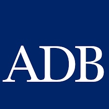
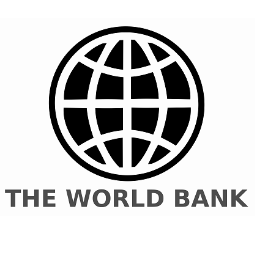
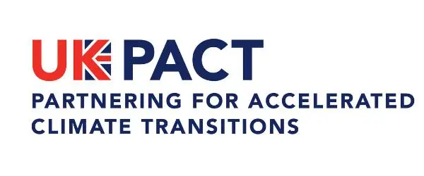
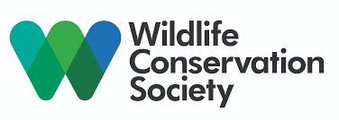
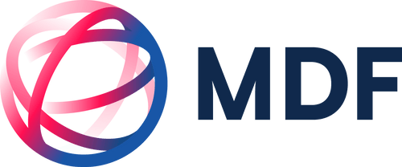
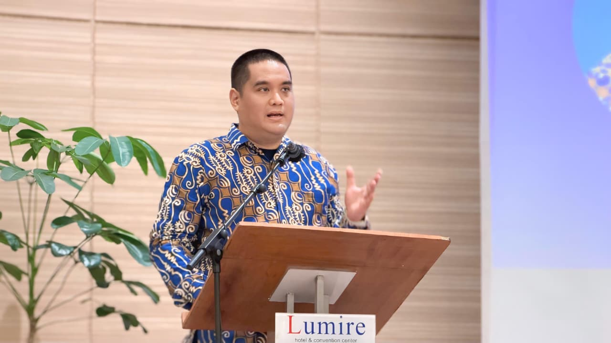
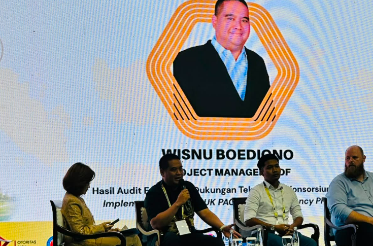

Dipercaya & Berkolaborasi Dengan







🌿 Halo, Saya
Konsultan investasi untuk efisiensi energi & energi terbarukan: Life Cycle Cost Analysis (LCCA), NPV, IRR, persiapan & linkage dengan ESCO.

Advisory teknis berbasis metodologi terstandarisasi dan rekam jejak yang dapat diverifikasi di tingkat nasional maupun internasional.
LCCA, NPV, IRR, financial modelling, dan linkage ke ESCO untuk proyek efisiensi energi dan energi terbarukan.
Manajemen program dan proyek efisiensi energi & dekarbonisasi dari skala SME hingga nasional.
Implementasi & pendampingan sistem manajemen energi sesuai standar internasional ISO 50001 dan ISO 50005.
Advisory kebijakan iklim & energi, termasuk government liaison dengan ESDM/EBTKE dan KLHK.
PMD Pro, RBM, Theory of Change, MEAL — pelatihan berbasis metodologi internasional yang terstandarisasi.
Riset terapan, penyusunan policy brief, dan fasilitasi pemangku kepentingan multi-sektor.
Pengalaman lintas pemerintah, donor internasional, dan program akar rumput — dengan hasil yang dapat diukur dan diverifikasi.

Dipercaya & Berkolaborasi Dengan





Proyek nyata dengan lembaga internasional, kementerian, dan organisasi masyarakat — semua dapat diverifikasi.
Koordinator nasional program dekarbonisasi & efisiensi energi untuk usaha kecil dan menengah (SME) di Indonesia.
Disusun untuk Kementerian ESDM/EBTKE sebagai panduan implementasi sistem manajemen energi tingkat nasional.
Pengembangan sistem pelaporan manajemen energi secara daring untuk skala nasional.
Program dekarbonisasi dan peningkatan kapasitas untuk sektor bisnis di Bali, didukung oleh MDF — sedang berjalan.
Penjangkauan 21.500 petani kecil di Sulawesi Selatan, Lampung, dan Sumatera Barat dalam program pemberdayaan petani kakao.
Saya melayani organisasi yang membutuhkan advisory teknis berbasis data dengan rekam jejak yang terverifikasi.
ADB, World Bank, FCDO, GIZ, dan lembaga donor yang membutuhkan konsultan EE/RE dengan pengalaman lapangan yang terverifikasi.
ESDM, KLHK, BAPPENAS, dan instansi pemerintah yang memerlukan advisory kebijakan dan implementasi teknis EE/RE.
Industri manufaktur, properti, dan sektor lain yang menargetkan efisiensi energi, dekarbonisasi, atau sertifikasi ISO 50001.
Organisasi masyarakat sipil yang memerlukan keahlian teknis EE/RE dan kapasitas metodologi RBM/MEAL.
Developer proyek energi terbarukan atau efisiensi energi yang membutuhkan analisis investasi, LCCA, dan linkage ESCO.
Universitas dan lembaga riset yang memerlukan kolaborasi policy brief atau penelitian terapan di bidang energi dan iklim.
Kontribusi teknis yang dipublikasikan dan digunakan oleh lembaga pemerintah serta institusi internasional.
Panduan implementasi sistem manajemen energi untuk Kementerian ESDM/EBTKE — diterbitkan dan diadopsi secara resmi.
Sistem pelaporan manajemen energi secara daring yang dikembangkan untuk skala operasional nasional.
Policy brief dan laporan riset terapan di bidang efisiensi energi dan dekarbonisasi untuk donor dan pemerintah.
Sertifikasi internasional dan metodologi terstandarisasi yang menjadi landasan setiap penugasan konsultasi.
Energy & Climate Consultant dengan rekam jejak lintas sektor yang terverifikasi.
11 tahun pengalaman lintas pemerintah–donor–akar rumput; lulusan universitas Australia (Murdoch, RMIT); pengalaman dari level menteri hingga 21.500 petani; bilingual EN/ID.
11 tahun bergerak di lintas sektor: pemerintah (ESDM, KLHK), donor internasional (ADB, World Bank, FCDO), dan program akar rumput hingga 21.500 petani.
Lulusan Murdoch University & RMIT University, Australia — dengan fokus pada environmental management dan kebijakan energi.
Hubungan kerja aktif dengan ADB, World Bank, FCDO, Kementerian ESDM/EBTKE, KLHK, Save the Children, WCS, dan MDF.
USD 1,1 juta pendanaan green economy diamankan; 21.500 petani dijangkau; ISO 50005 Building Book & POME diterbitkan untuk Kementerian ESDM.
Hubungi saya untuk mendiskusikan kebutuhan advisory, program efisiensi energi, atau peluang kolaborasi proyek.